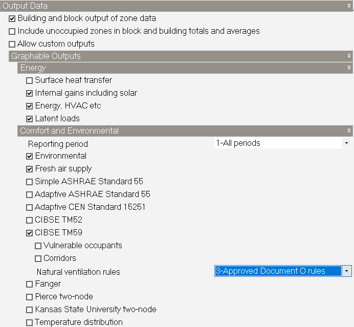
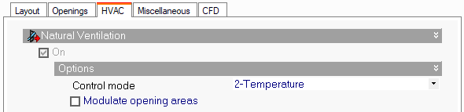
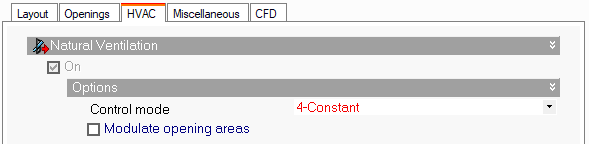
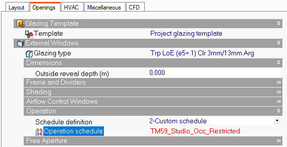

CIBSE TM59:2017 - Guía de modelado y análisis
TM59:2017 es un método normalizado para predecir el riesgo de sobrecalentamiento en diseños de edificios residenciales nuevos o de rehabilitación importante mediante análisis térmico dinámico. Se ha probado principalmente en pisos, que suelen presentar mayor riesgo que las casas, aunque también es aplicable a estas.
Descripción general
Esta guía resume los puntos clave de la metodología CIBSE TM59:2017 y ofrece un ejemplo comentado del flujo de análisis TM59 en DesignBuilder. Se divide en las secciones siguientes:
- Proceso de modelado TM59:2017
- Ejecución del análisis TM59
- Resultados TM59
El ejemplo de modelado comienza después de completar la geometría del modelo, incluida la asignación de construcciones y aberturas.

Nota: esta guía no incluye todos los detalles necesarios para construir, simular y evaluar un modelo conforme a TM59 2017; sigue siendo necesario consultar la propia norma TM59 Design methodology for the assessment of overheating risk in homes.
Proceso de modelado TM59
Datos meteorológicos
El archivo Design Summer Year (DSY) que debe utilizarse se prescribe por ubicación en CIBSE TM59 Weather file requirements (CIBSE, 2026a), sección 1.3. Utiliza el DSY indicado para la ubicación del edificio, impórtalo mediante Añadir datos meteorológicos horariosy comprueba que está cargado el archivo correcto antes de ejecutar. CIBSE actualizará los archivos y las orientaciones cuando haya nuevas proyecciones meteorológicas, por lo que debes comprobar los datos de cada proyecto.
Desde 2017, el requisito mínimo para simulaciones TM59 es utilizar datos meteorológicos DSY1 Future de la ubicación más cercana y del escenario 2020s, High emissions, percentil 50th %.
Nota: Aunque 2020 es claramente un año pasado, en TM59 sigue considerándose dato meteorológico «futuro» porque este aspecto de la norma se concibió en 2017.
Consejo: Puedes obtener archivos meteorológicos CIBSE Future 2016 adecuados para análisis TM59 en la página de archivos meteorológicos CIBSE de DesignBuilder.
Los archivos meteorológicos DSY necesarios para las simulaciones pueden importarse mediante el método descrito en la página de ayuda Añadir datos meteorológicos horarios .
Tipo de exposición
Este ajuste afecta a los caudales calculados de ventilación natural y debe reflejar el emplazamiento real. El tipo de exposición adecuado puede establecerse a nivel de emplazamiento en la pestaña Ubicación > Detalles del emplazamiento > Exposición al viento.
Velocidad del aire
Según capítulo 3.6 de TM59, la velocidad del aire modelada debe establecerse en 0.1 m/s, valor utilizado cuando no hay movimiento de aire elevado. Para cumplirlo puede establecerse un programación de velocidad del aire adecuado a nivel de edificio en la pestaña Actividad, definiendo así la velocidad del aire en todas las zonas.
Configuración de opciones del modelo
Ajusta las opciones predeterminadas del modelo para que las plantillas de actividad TM59 predefinidas funcionen correctamente:
| Ajuste | Valor | Pestaña de opciones del modelo | Encabezado | Explicación |
| Datos de ganancias | Inicial | Datos | Datos de ganancias | Alinea los perfiles de ganancias con las plantillas TM59. |
| Método de ocupación | 3-Número de personas | Datos | Datos de ganancias | Utiliza los números fijos de personas de las plantillas. |
| Ganancias latentes de ocupación | 2-Fracción fija | Datos | Datos de ganancias |
Según el capítulo 5.1 de TM59: «En los espacios habitables se supone un calor sensible máximo de 75 W/person y una ganancia de calor latente máxima de 55 W/person». Establecer Ganancias latentes de ocupación en 2-Fracción fija garantiza que las ganancias de ocupación simuladas se ajusten a la norma, es decir, que siempre se utilice la relación 75/55W. |
| Unidades de ganancias de equipos | 2-Potencia absoluta de zona | Datos | Datos de ganancias | Ganancias absolutas de equipos por zona. |
| Unidades de ganancias de iluminación | 1-Densidad de potencia | Datos | Datos de ganancias | Cargas de iluminación por densidad de potencia (TM59 cap. 5.2). |
| Ventilación natural | Calculada | Datos | Ventilación natural e infiltración | Necesaria para el control de ventanas mediante la red de flujo de aire. |
| Agrupar ventanas similares en superficie | Desmarcada | Avanzado | Simplificación |
Mantiene distintos los ajustes de control de cada ventana. Las ventanas similares de una misma superficie no deben agruparse, para que cada una tenga sus propios ajustes. |
Trabajo con plantillas TM59
Para reducir el trabajo de configuración de los perfiles de ganancias de ocupantes y equipos se proporcionan plantillas de actividad TM59. Se encuentran en la carpeta de actividad «Espacios residenciales».

Seleccionar la plantilla de actividad adecuada garantiza que se generen los informes TM59 correctos para cada zona y evita resultados innecesarios.
También se proporciona la plantilla de iluminación «TM59 Lighting» para establecer las cargas adecuadas conforme al capítulo 5.2 de TM59. Puede seleccionarse en la pestaña Iluminación.
Consejo: La herramienta Cargar datos desde plantilla puede acelerar la asignación de plantillas de actividad e iluminación. Véase la captura siguiente.

- Abre la pestaña Cargar datos y elige la actividad que se aplicará.
- Abre la pestaña Objetivo y selecciona todas las zonas pertinentes. Ten en cuenta que al seleccionar el nivel de edificio o bloque la herencia sigue funcionando de la forma habitual.

Un ejemplo de planta con todas las asignaciones podría ser:

Consejo: Para nombrar muchas zonas puede resultar útil la opción de programa Doble clic para navegar en el árbol del modelo . Permite cambiar rápidamente el nombre de las zonas a nivel de bloque haciendo clic en el nombre en el Navegador y editándolo, sin navegar innecesariamente al nivel de zona. Así puedes cambiar el nombre de la siguiente zona sin volver a subir al nivel de bloque.
Control ambiental interior - Estrategia de ventilación
Elegir una estrategia de ventilación adecuada es importante para la evaluación TM59. Por tanto, selecciona cuidadosamente los datos de entrada y analiza los resultados para comprobar que el control de apertura de ventanas funciona como se ha diseñado.
Cuando se utiliza la opción Calculada de ventilación natural , los datos de entrada se definen en las secciones siguientes de los datos del modelo.
Pestaña Actividad
- Temperatura de consigna de ventilación establecida en Actividad > Control ambiental > Temperaturas de consigna de ventilación.

Pestaña HVAC
- Establece la plantilla HVAC adecuada y asegúrate de activar la ventilación natural y mecánica según corresponda.
Nota 1: Los resultados TM59 solo se presentan para zonas sin refrigeración mecánica.
Nota 2: Debe activarse la ventilación natural en la pestaña HVAC antes de poder acceder a los datos correspondientes de ventanas y rejillas en la pestaña Aberturas.
- Factor de viento – si realizas una evaluación de diseño conservadora, puede ser adecuado reducir el efecto del viento. Para ello utiliza HVAC > Ventilación natural > Opciones > Factor de viento.
- Modo de control – cuando 2-Temperatura , el control de aberturas intenta mantener automáticamente la temperatura mínima de consigna de ventilación definida en la pestaña Actividad.

Nota de implementación
La norma TM59 establece:
«Las ventanas de cada habitación deben controlarse por separado y modelarse abiertas cuando la temperatura interior de bulbo seco supere 22 °C y la habitación esté ocupada».
Para evitar que las ventanas se abran cuando las zonas no están ocupadas y la temperatura es inferior a 22° C, las plantillas de actividad TM59 predefinidas tienen la Temperatura de consigna de ventilación natural establecida en 22° C y utilizan la programación de ocupación TM59 predeterminada.
Ten en cuenta que el 2-TemperaturaModo de control proporciona un control idealizado: cuando las condiciones exteriores no son favorables, las aberturas se cierran. Es decir, se cierran cuando Toutdoor > Tindoor para evitar introducir aire caliente en la zona controlada. Esto podría no cumplir la norma TM59, ya que no describe este mecanismo avanzado y simplemente establece que las ventanas deben abrirse cuando Tindoor > 22° C y la habitación está ocupada.
En resumen, TM59 exige abrir las ventanas cuando la habitación está ocupada y:
Tindoor > 22°C
Mientras que la regla predeterminada de DesignBuilder abre las ventanas cuando:
Toutdoor < Tindoor > 22°C
Como las reglas predeterminadas de control de ventilación natural de DesignBuilder no cumplen exactamente los requisitos de TM59, se proporciona la opción de anulación 2-Reglas TM59 para garantizar que las aberturas sigan abiertas incluso cuando las condiciones exteriores no son favorables. La anulación de reglas TM59 puede aplicarse desde «Editar opciones de cálculo» > «Resultados representables» > «Confort y ambiente» > «CIBSE TM59» > «Reglas de ventilación natural».
Por defecto, la anulación solo se aplica a zonas que usan una plantilla de actividad TM59, excluidos los pasillos. También se aplica únicamente con la opción de modelo de ventilación natural calculada.
Control de temperatura
Las consignas y programaciones de temperatura predeterminadas de actividad TM59 se basan en datos UK NCM. Las programaciones de calefacción se han modificado para utilizar la temperatura de reducción en lugar de la consigna de mayo a septiembre.
Los controles ambientales se configuran normalmente según el diseño del edificio.
Para reducir la posibilidad de calefacción simultánea y apertura de ventanas, se implementa un mecanismo mediante la opción de cálculo Aplicar reglas de ventilación natural TM59 . Véase la explicación anterior en pestaña HVAC.
Nota importante: El requisito TM59 de abrir ventanas cuando la temperatura interior supera 22°C puede causar fácilmente calefacción y apertura simultáneas. Es más probable cuando:
- Temperatura de consigna de calefacción está próxima a la temperatura de consigna de ventilación
- Hay grandes áreas practicables en la zona
- Se utiliza un número menor de «Pasos de tiempo por hora» para la simulación
En general, para evitar calefacción y ventilación simultáneas, las consignas de calefacción no deben superar 21°C al modelar evaluaciones de sobrecalentamiento TM59.
Pestaña Aberturas
- Funcionamiento – al usar plantillas predeterminadas, este campo debe utilizar la programación Ocupación para permitir la apertura de ventanas solo cuando la habitación esté ocupada. Se establece en Aberturas > Ventanas exteriores > Funcionamiento.
- Apertura libre – el área practicable de la ventana puede definirse mediante el ajuste% de área de acristalamiento que se abre . Normalmente influye considerablemente en los caudales de aire exterior de ventilación natural. Se establece en Aberturas > Ventanas exteriores > Apertura libre.

Nota: Las persianas y dispositivos de sombra deben modelarse según el capítulo 3.7 de TM59.
Aberturas interiores
Según la norma TM59:
«Las puertas interiores pueden incluirse y dejarse abiertas en el modelo durante el día, pero deben suponerse cerradas cuando los ocupantes duermen.”
Para mejorar el flujo por la red de aire, normalmente conviene incluir aberturas interiores como puertas, configuradas para abrirse según las reglas TM59.
Para otros detalles, orientaciones o restricciones sobre apertura de ventanas y puertas, consulta el capítulo 3.3 de TM59.
Pérdidas térmicas de tuberías, HIU y cinta de mantenimiento de calor
Las ganancias de calor de tuberías, unidades de interfaz térmica y cinta de mantenimiento de calor deben añadirse manualmente a los espacios pertinentes mediante los datos de actividad de ganancias internas. Encontrarás más información en el capítulo 3.8 de TM59.
Cálculos de mitigación del sobrecalentamiento Part-O de la normativa de construcción
El Approved Document O: Overheating, sección 2: evaluación mediante modelado térmico dinámico, se basa en TM59, con las limitaciones explicadas abajo en Reglas de ventilación.
El método TM59 de CIBSE requiere que el modelador tome decisiones. El método de modelado térmico dinámico Part-O limita estas decisiones, como se detalla en el apartado 2.6 siguiente. Deben aplicarse estos límites al seguir las orientaciones de TM59 de CIBSE.
Se aplican todos los límites siguientes de TM59 de CIBSE, sección 3.3.
a. Cuando una habitación está ocupada durante el día (8am a 11pm), las aberturas deben modelarse de modo que:
i. Empiecen a abrirse cuando la temperatura interior supere 22°C.
ii. Estén completamente abiertas cuando la temperatura interior supere 26°C.
iii. Empiecen a cerrarse cuando la temperatura interior baje de 26°C.
iv. Estén completamente cerradas cuando la temperatura interior baje de 22°C.
b. Por la noche (11pm a 8am), las aberturas deben modelarse completamente abiertas si se cumplen ambas condiciones:
i. La abertura está en la primera planta o superior y no es fácilmente accesible.
ii. La temperatura interior supera 23°C a las 11pm.
c. Cuando una habitación en planta baja o de fácil acceso está desocupada, se aplican ambas condiciones:
i. Durante el día, las ventanas y puertas de patio y balcón deben modelarse abiertas si puede hacerse de forma segura, siguiendo las indicaciones siguientes.
ii. Por la noche, las ventanas y puertas de patio y balcón deben modelarse cerradas.
d. Debe incluirse una puerta de entrada, cerrada en todo momento.
Notas de modelado
-
Los controles personalizados cubren los puntos a. y b. anteriores de las reglas de ventilación cuando se selecciona la 3-Reglas Approved Document Oopción de resultados TM59 .

-
La consigna de ventilación siempre se modela como 22°C, independientemente del ajuste de la pestaña Actividad.
-
Para aplicar el control Approved Document O, las aberturas deben tener elModo de control establecido en 2-Temperatura.

-
Para modelar un funcionamiento sencillo abierto / cerrado sin modulación, puedes establecer el Modo de control en 4-Permanente. Este control puede proporcionar ventilación de purga. En ese caso, si la temperatura interior > 22°C las ventanas se abren completamente. Sin embargo, este modo no cumple Approved Document O y solo tiene fines informativos. Otros modos de control no son válidos.

-
La restricción de apertura nocturna puede aplicarse mediante una programación personalizada, por ejemplo:



SCHEDULE:COMPACT,
TM59_Studio_Occ_Restricted,
Fraction,
Through: 31 Dec,
For: WinterDesignDay,
Until: 24:00, 0,
For: AllOtherDays,
Until: 08:00, 0,
Until: 23:00, 1,
Until: 24:00, 0;
Ejecución del análisis TM59
Opciones de cálculo - General
Para obtener resultados correctos es necesario ejecutar un análisis anual completo (1st Jan – 31st Dec). También es importante ejecutar simulaciones breves y comprobar los resultados horarios / subhorarios para garantizar que el control de ventilación y ambiental funciona como se espera.
Recuerda que el propósito de un análisis TM59 es evaluar el riesgo de sobrecalentamiento y que, debido a los requisitos específicos de ventilación TM59, el mismo modelo puede no generar resultados precisos de consumo energético. Para evitarlo, puedes seleccionar la opción 1-Controles estándar de EnergyPlus en la lista de la opción de cálculo Reglas de ventilación natural al ejecutar simulaciones en las que el consumo energético sea un resultado importante.
Consejo: Cuando hayas comprobado que el modelo funciona correctamente y estés listo para generar resultados TM59, suele convenir desmarcar las casillas de intervalos de resultados horarios y subhorarios en el cuadro Opciones de cálculo de simulación para mantener un tamaño manejable de los conjuntos de resultados.
Opciones de cálculo - Opciones
Con ventilación natural calculada, generalmente debes utilizar al menos 6 pasos de simulación por hora. Aunque aumenta el tiempo de simulación, proporciona resultados más precisos, especialmente para el control de apertura de ventanas.
Opciones de cálculo - Gestor de simulaciones
Utilizar el Gestor de simulaciones para TM59 permite seguir trabajando en el modelo durante la simulación y, si es necesario, ejecutar varias en paralelo y comparar resultados lado a lado en el visor.
Nota: Para continuar trabajando en DesignBuilder o ejecutar otra simulación, primero debe cerrarse el cuadro del Gestor de simulaciones.
Opciones de cálculo - Resultados
Los resultados del análisis TM59 se obtienen seleccionando CIBSE TM59 en la pestaña Resultados > Resultados representables. Otros ajustes, ventilación mecánica y ocupantes vulnerables, se explican abajo.

Resultados básicos CIBSE TM59
Seleccionar la opción de resultados CIBSE TM59 genera resultados según los requisitos del capítulo 4.2 de TM59 , como se describe abajo.

A partir de TM52 y CIBSE Guide A, la conformidad exige cumplir ambos criterios 1 y 2:
a) Para salones, cocinas y dormitorios:
- Criterio 1 CIBSE TM52: Debe cumplirse el criterio de horas de superación (dT ≥ 1K no debe superar el 3% de los periodos ocupados de mayo a septiembre).
Este criterio se presenta para zonas ocupadas y sin refrigeración que utilizan las siguientes plantillas de actividad:
- TM59_1/2/3-BedKitchen,
- TM59_1/2/3-BedLiving,
- TM59_1/2/3-BedLivingKitchen,
- TM59_Studio,
- TM59_Single_Bedroom,
- TM59_DoubleBedroom.
b) Solo para dormitorios:
- capítulo 4.2 de CIBSE TM59: La temperatura operativa del dormitorio entre las 10 pm y las 7 am no debe superar 26 °C durante más del 1% de las horas anuales. El 1% de las horas anuales entre 22:00 y 07:00 para dormitorios son 32 horas, de modo que 33 horas o más por encima de 26 °C se considera incumplimiento.
Este criterio se presenta para zonas ocupadas y sin refrigeración que utilizan las siguientes plantillas de actividad:
- TM59_Studio,
- TM59_Single_Bedroom,
- TM59_DoubleBedroom.
Los criterios 2 y 3 de CIBSE TM52 pueden incumplirse, pero deben cumplirse ambos criterios (a) y (b) anteriores en todas las habitaciones pertinentes. En particular, los dormitorios deben cumplir los criterios 1 y 2.
Para obtener los resultados de los criterios 2 y 3 de CIBSE TM52 es necesario seleccionar resultados TM52; pueden seleccionarse simultáneamente resultados TM52 y TM59.
Por defecto, en los cálculos TM59 la categoría del edificio basada en CIBSE TM52 es Cat. II.
Ventilación mecánica CIBSE TM59
DesignBuilder determina si un edificio tiene ventilación predominantemente mecánica mediante los ajustes de la pestaña HVAC y añade resultados según el capítulo 4.3 de TM59 , como se describe abajo.
Todas las habitaciones ocupadas no deben superar una temperatura operativa de 26 ˚C durante más del 3% de las horas anuales ocupadas (CIBSE Guide A (2015a)).
Este criterio solo se presenta para zonas ocupadas y sin refrigeración que utilizan las siguientes plantillas de actividad:
- TM59_1/2/3-BedKitchen,
- TM59_1/2/3-BedLiving,
- TM59_1/2/3-BedLivingKitchen,
- TM59_Studio,
- TM59_Single_Bedroom,
- TM59_DoubleBedroom.
Ocupantes vulnerables CIBSE TM59

Seleccionar este resultado cambia la categoría de los edificios con ventilación predominantemente natural según el capítulo 4.2 de TM59 , como se describe abajo.
Las residencias de cuidados y alojamientos para ocupantes vulnerables con ventilación predominantemente natural deben suponer ocupación tipo I (véase CIBSE TM52 (2013) para la descripción).
Pasillos CIBSE TM59

Seleccionar este resultado produce resultados según el capítulo 4.5 de TM59 , como se describe abajo.
La prueba de sobrecalentamiento de pasillos debe basarse en el número de horas anuales en que se supera una temperatura operativa de 28 °C. Aunque no hay un objetivo obligatorio, si se supera 28 °C durante más del 3% de las horas anuales totales debe señalarse como riesgo importante en el informe.
Este criterio se presenta para zonas que utilizan las siguientes plantillas de actividad:
- TM59_CommonCirculationAreas
- TM59_CirculationAreas.
Resultados TM59:2017
Los resultados TM59:2017 deben verse en el visor de resultados de DesignBuilder, accesible desde DesignBuilder o desde el Gestor de simulaciones.
Visor de resultados de DesignBuilder
El Visor de resultados es una aplicación independiente para ver resultados EnergyPlus almacenados en uno o varios archivos .eso. Puede descargarse desde la sección Descargas > Software del sitio web de DesignBuilder. Una vez instalada, permite ver cualquier resultado contenido en archivos .eso y .htm de EnergyPlus.
Simulación estándar (sin Gestor de simulaciones)
Los resultados de la simulación más reciente se almacenan en el archivo eplusout.eso de la carpeta EnergyPlus.
Puedes abrir el archivo por cualquiera de las siguientes rutas de acceso de la interfaz DB:
- Ve a la carpeta EnergyPlus (Archivo > Carpetas > Carpeta EnergyPlus) y haz doble clic en el archivo eso para abrirlo en el visor.
- Utiliza el icono de la barra en la pantalla Simulación.
Otras formas de abrir archivos de resultados .eso son:
- Desde el visor de resultados utiliza el comando de menú Archivo > Abrir eso/conjunto de datos .
- Si haces la selección adecuada en el cuadro Opciones del programa , DesignBuilder ofrecerá abrir el archivo de resultados .eso al terminar la simulación.
Simulaciones con el Gestor de simulaciones
Puedes acceder directamente a los resultados TM59 desde la interfaz Gestor de simulaciones haciendo clic en el icono Ver resultados en el visor de resultados de DesignBuilder.

Interpretación de los resultados del visor
Al abrir en el visor un archivo eso con resultados TM59 aparece una pestaña adicional CIBSE TM59 . Al hacer clic en ella se muestra la tabla resumen TM59, como se ve abajo.


Criterios para viviendas con ventilación predominante
La conformidad se basa en cumplir ambos criterios siguientes:
(a) Para salones, cocinas y dormitorios:
- Criterio 1 CIBSE TM52: Debe cumplirse el criterio de horas de superación (dT ≥ 1K no debe superar el 3% de los periodos ocupados de mayo a septiembre).
El criterio A se cumple si el valor es igual o inferior a 3%.
En el ejemplo anterior la zona TypicalFlat:LivingRoomXKitchen no cumple el criterio A porque las horas de superación son superiores a 3%.
(b) Solo para dormitorios:
- La temperatura operativa del dormitorio entre las 10 pm y las 7 am no debe superar 26 °C durante más del 1% de las horas anuales. (Nota: el 1% de las horas anuales entre 22:00 y 07:00 para dormitorios son 32 horas, por lo que 33 horas o más por encima de 26 °C se registran como incumplimiento).
El criterio B se cumple si el valor es igual o inferior a 32 horas.
En el ejemplo anterior ambos dormitorios cumplen el criterio B porque la temperatura operativa se supera durante menos de 32 horas.
Criterios para viviendas con ventilación predominantemente mecánica
Todas las habitaciones ocupadas no deben superar una temperatura operativa de 26 ˚C durante más del 3% de las horas anuales ocupadas (CIBSE Guide A (2015a)).
Pasillos: criterios de evaluación
La prueba de sobrecalentamiento de pasillos debe basarse en el número de horas anuales en que se supera una temperatura operativa de 28 °C. Aunque no hay un objetivo obligatorio, si se supera 28 °C durante más del 3% de las horas anuales totales debe señalarse como riesgo importante en el informe.
En el ejemplo anterior ambas zonas de pasillo cumplen los criterios con menos del 3% de superación.